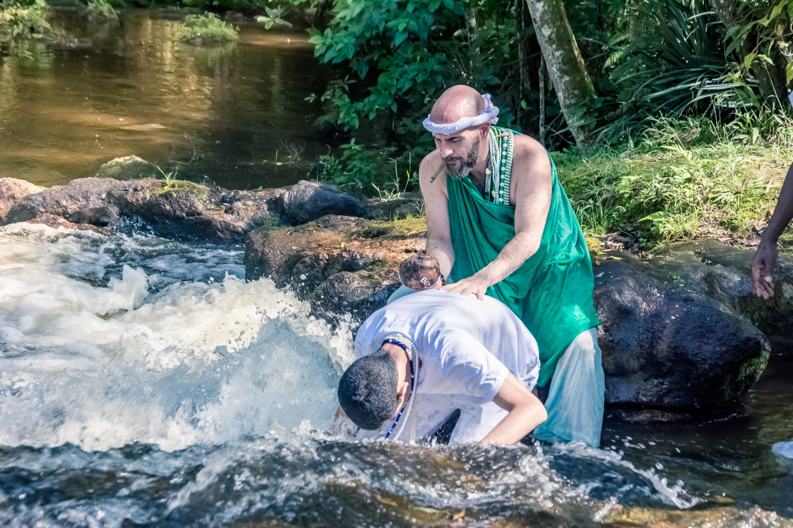
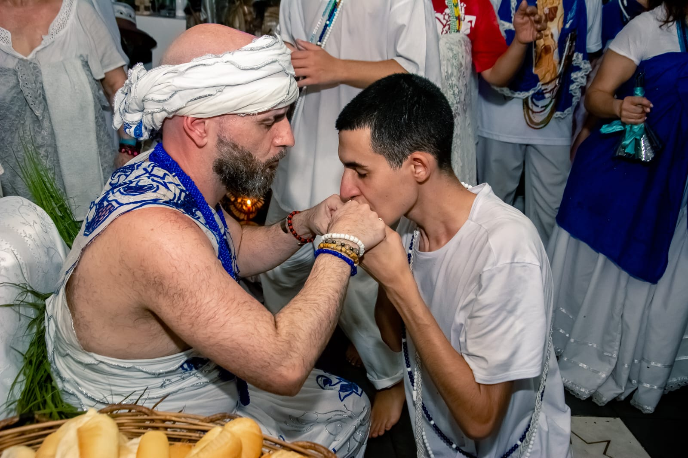
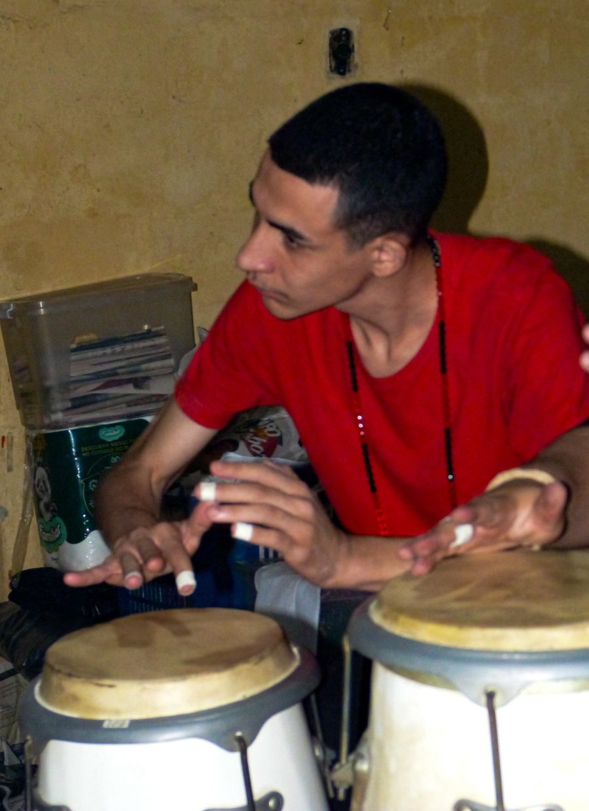

Sobre Mim
Uma apresentação da minha trajetória, da minha relação com a percussão e dos conhecimentos aplicados durante o semestre.
Quem sou
Meu nome é Nicollas Martins Candido. Este espaço apresenta minha relação com o tema do projeto e a experiência de aprendizagem desenvolvida ao longo do semestre.
Sou ogã e umbandista, e a percussão faz parte da minha vivência. Essa relação foi uma das motivações para desenvolver um acervo digital dedicado aos instrumentos e às manifestações culturais afro-brasileiras.

A minha história
Minha história com a Umbanda começou desde o meu nascimento. Nascido e criado dentro de um terreiro, tive meu primeiro contato com essa vivência ainda na infância. Por volta dos cinco anos, deixei de frequentar a casa por um longo período, retornando aos 13 para 14 anos, inicialmente como convidado, vestindo branco e participando dos rituais.
Foi a partir desse retorno que desenvolvi uma conexão cada vez maior com os instrumentos de percussão e passei a compreender melhor sua importância dentro dos trabalhos religiosos. Com o passar dos anos, essa relação deixou de ser apenas um interesse e se tornou parte importante da minha caminhada.
Hoje, aproximadamente dez anos depois do meu retorno, recebi um cargo dentro do terreiro e sou responsável pelos instrumentos de percussão, além de auxiliar no andamento dos trabalhos enquanto os responsáveis estão em transe.
Essa trajetória é uma das principais motivações por trás deste projeto. Mais do que estudar os instrumentos e suas características, quero compartilhar um pouco daquilo que conheço e vivencio, valorizando a importância da percussão nas manifestações culturais e religiosas de matriz africana.

Por que este projeto?
Escolhi desenvolver este projeto porque o tema está profundamente ligado à minha história, à minha vivência e à cultura da qual faço parte. A percussão, especialmente os atabaques, sempre despertou minha paixão e ocupa um lugar muito importante na minha trajetória dentro da Umbanda.
Além da conexão pessoal, também vejo neste projeto uma oportunidade de dar visibilidade a uma parte importante da nossa cultura que, durante muito tempo, foi alvo de preconceito, repressão e perseguição. Instrumentos e manifestações ligados às rodas de samba, às giras de Umbanda e às tradições religiosas de matriz africana, incluindo as de influência iorubá, já foram reprimidos e tiveram seus instrumentos apreendidos.
Por isso, quero utilizar este espaço não apenas para apresentar instrumentos e suas características, mas também para valorizar suas origens, seus significados e a importância que carregam. Afinal, esses instrumentos representam muito mais do que música: são parte da história, da identidade, da resistência e da preservação de diferentes tradições culturais.
